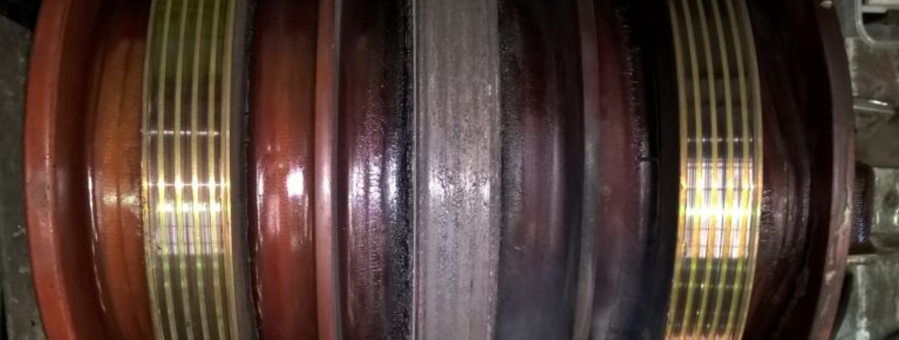
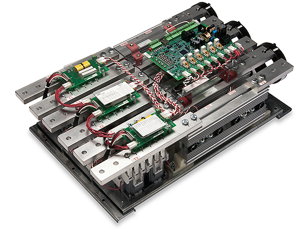
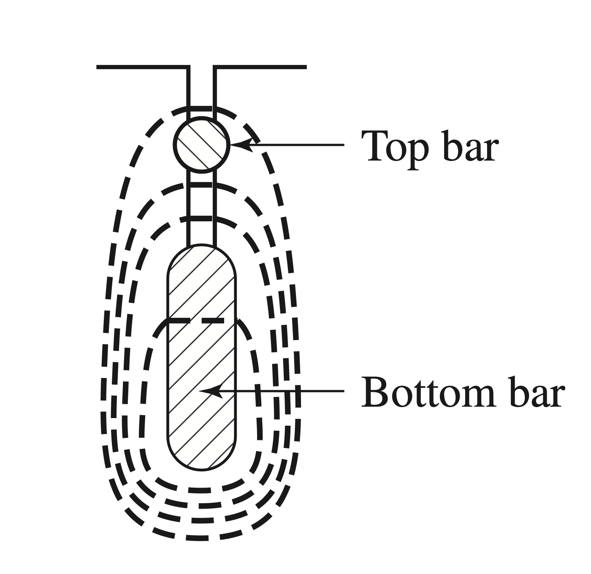
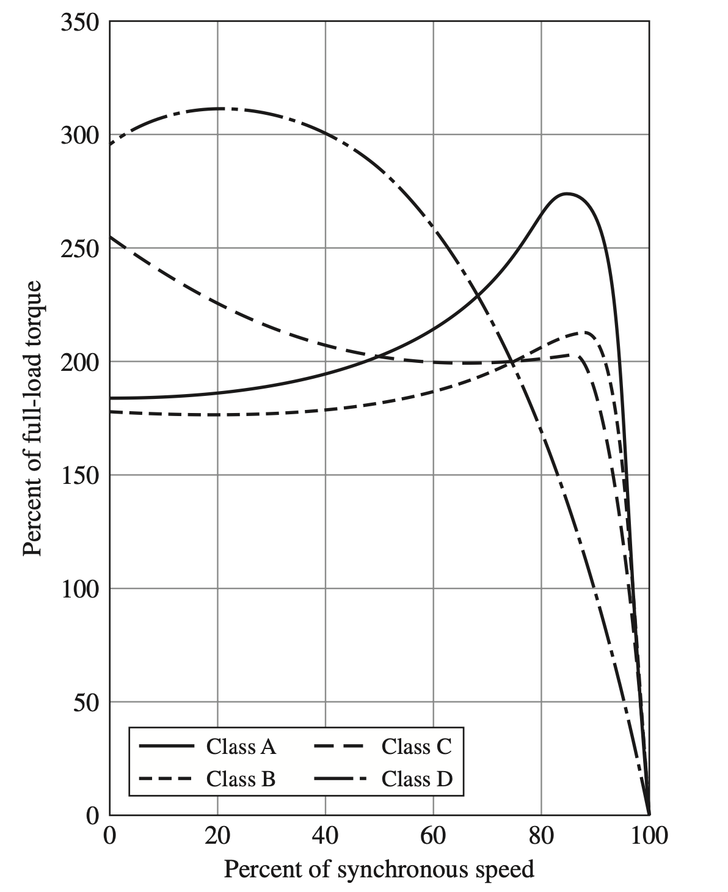

A fundamental limitation of IMInduction Machinean AC electric motor in which the electric current in the rotor that produces torque is obtained by electromagnetic induction from the magnetic field of the stator winding.s with constant rotor resistance is the rotor design has to be a compromise.
High efficiency under normal conditions requires low rotor resistance, but low rotor resistance results in low starting torque and high starting current with low starting power factor.
The use of a wound rotor is an effective way of avoiding the need for compromise. In a this
configuration, the rotor is constructed with a poly-phase winding similar to the stator. The terminals of
the rotor windings are connected to slip rings such as the ones shown in Fig. 6.17. Stationary brushes
in contact with the slip rings are used to connect the windings in series with external resistors which
can be used to control the starting torque and current. As the motor comes up to speed, the resistor
values can be varied and they can ultimately be short-circuited to achieve maximum efficiency at
operating speeds. [174] 
The general nature of the effects on the torque-speed characteristics caused by varying rotor resistance has been shown in Fig. 6.14. By use of the appropriate value of rotor resistance, the maximum torque can be made to occur at standstill if high starting torque is needed. As the rotor speeds up, the external resistances can be decreased, making maximum torque available throughout the accelerating range. Given most of the rotor loss () is dissipated in the external resistors, the rotor temperature rise during starting is lower than it would be if the resistance were incorporated in the rotor winding. For normal running, the rotor winding can be short-circuited directly at the brushes. The rotor winding itself is typically designed to have low resistance so that running efficiency is high and full-load slip is low. Besides their use when starting requirements are severe, wound-rotor IMInduction Machinean AC electric motor in which the electric current in the rotor that produces torque is obtained by electromagnetic induction from the magnetic field of the stator winding.s can be used for adjustable-speed drives.
Their primary disadvantage is greater cost and complexity than squirrel-cage motors.
The principal effects of varying rotor resistance on the starting and running characteristics of IMInduction Machinean AC electric motor in which the electric current in the rotor that produces torque is obtained by electromagnetic induction from the magnetic field of the stator winding.s can be shown quantitatively by the following example.
A three-phase, , , four-pole, wound-rotor induction motor, with its slip rings short-circuited, has the following properties:
| Parameter | Value | ||||
| Full-load slip | |||||
| Rotor at full-load torque | |||||
| Slip at maximum torque | |||||
| Rotor current at maximum torque | , where is the full-load rotor current | ||||
| Torque at 20% slip | , where is the full-load torque | ||||
| Rotor current at 20% slip | |||||
If the rotor-circuit resistance is increased to by connecting non-inductive resistances in series with each rotor slip ring, determine:
- a.
- the slip at which the motor will develop the same full-load torque,
- b.
- total rotor-circuit loss at full-load torque,
- c.
- horsepower output at full-load torque,
- d.
- slip at maximum torque,
- e.
- rotor current at maximum torque,
- f.
- starting torque, and
- g.
- rotor current at starting.
Express the torques and rotor currents in per unit based on the full-load torque values.
To solve this problem, we need to understand the effects of changes in the rotor resistance are seen from the stator in terms of changes in the referred resistance . Examining the equivalent circuit shows that, for specified applied voltage and frequency, everything concerning the stator performance is fixed by the value of , assuming the other impedance elements being constant
Added physical significance can be given to the argument by examining the effects of simultaneously doubling and from the viewpoint of the rotor. An observer on the rotor would see the resultant air-gap flux wave traveling past at twice the original slip speed, generating twice the original rotor voltage at twice the original slip frequency. The rotor reactance therefore is doubled, and since the original premise is that the rotor resistance also is doubled, the rotor impedance is doubled while the rotor power factor is unchanged. Since rotor voltage and impedance are both doubled, the effective value of the rotor current remains the same; only its frequency is changed. The air gap still has the same synchronously rotating flux and mmf waves with the same torque angle. An observer on the rotor would then agree with a counterpart on the stator that the torque is unchanged.
An observer on the rotor, however, would be aware of two changes not apparent in the stator:
- 1.
- the rotor loss will doubled, and
- 2.
- the rotor is turning more slowly and therefore developing less mechanical power with the same torque.
In other words, more of the power absorbed from the stator goes into heat in the rotor, and less is available for mechanical power.
Let’s apply our logic to the given questions now:
- a.
- If the rotor resistance is increased five (5) times, the slip must increase five times for the same value of and therefore for the same torque. But the original slip at full load is 0.015. The new slip at full-load torque therefore is .
- b.
- The effective value of the rotor current is the same as its full-load
value before addition of the series resistance, and therefore the rotor
() loss is five times the full-load value of
,
or:
- c.
- The increased slip has caused the per-unit speed at full-load torque to drop
Given the ratio is unchanged, the torque is the same and therefore the power output has dropped proportionally, or
Because the air-gap power is unchanged, the decrease in electromechanical shaft power must be accompanied by a corresponding increase in rotor loss.
- d.
- If rotor resistance is increased five times, the slip at maximum torque simply increases five times.
But the original slip at maximum torque is 0.060. The new slip at maximum torque with the
added rotor resistance therefore is
- e.
- The effective value of the rotor current at maximum torque is independent of rotor
resistance; only its frequency is changed when rotor resistance is varied. Therefore,
- f.
- With the rotor resistance increased five times, the starting torque will be the same as the original
running torque at a slip of 0.20 and therefore equals the running torque without the series
resistors, namely,
- g.
- The rotor current at starting with the added rotor resistances will be the same as the rotor
current when running at a slip of 0.20 with the slip rings short-circuited, namely,
With the prominence of variable-speed drives [175] also called VFDVariable Frequency DriveVariable Frequency Drive which can apply variable-frequency voltages and currents to the stator and hence can control the slip as a function of motor speed, it is possible to control the applied frequency, and hence the motor slip, to achieve maximum torque at any desired rotor speed, including under starting conditions.
As a result, the use of wound-rotor motors has become less common because similar performance can now be obtained with squirrel-cage motors.
A simple and a clever way of obtaining a rotor resistance which automatically varies with speed is to use the following principle:
With suitable shapes and arrangements for rotor bars, squirrel-cage rotors can be designed so their effective resistance at is several times their DCDirect CurrentOne-directional flow of electric charge. Direct current may flow through a conductor such as a wire, but can also flow through semiconductors, insulators, or even through a vacuum as in electron or ion beams. The electric current flows in a constant direction, distinguishing it from alternating current (AC). A term formerly used for this type of current was galvanic current. resistance. The various schemes all make use of the inductive effect of the slot-leakage flux on the current distribution in the rotor bars.
This phenomenon is similar to the skin and proximity effect in any system of conductors carrying alternating current.
A redistribution of current occurring in nearby parallel electrical conductors with ACAlternating CurrentAn electric current that periodically reverses direction and changes its magnitude continuously with time, in contrast to direct current (DC), which flows only in one direction., caused by magnetic effects. In adjacent conductors carrying ACAlternating CurrentAn electric current that periodically reverses direction and changes its magnitude continuously with time, in contrast to direct current (DC), which flows only in one direction. current in the same direction, it causes the current in the conductor to concentrate on the side away from the nearby conductor, whereas in opposite directions, it causes the current in the conductor to concentrate on the side adjacent to the nearby conductor.
The proximity effect is caused by induced eddy currents For example, in a coil of wire carrying alternating current with multiple turns of wire lying next to each other, the current in each wire will be concentrated in a strip on each side of the wire facing away from the adjacent wires. This current crowding effect causes the current to occupy a smaller effective cross-sectional area of the conductor, increasing current density and ACAlternating CurrentAn electric current that periodically reverses direction and changes its magnitude continuously with time, in contrast to direct current (DC), which flows only in one direction. electrical resistance of the conductor.
The concentration of current on the side of the conductor gets larger with increasing frequency, so proximity effect causes adjacent wires carrying the same current to have more resistance at higher frequencies.
Consider first a squirrel-cage rotor having deep, narrow bars like that shown in cross section in Fig. 6.18. The general character of the slot-leakage flux produced by the current in the bar within this slot is shown in schematic form in the figure. If the rotor iron had infinite permeability, all the leakage-flux lines would close in paths below the slot, as shown. Now imagine the bar to consist of an infinite number of layers of differential depth where one at the bottom and one at the top are indicated in Fig. 6.18.
The leakage inductance of the bottom layer is greater than that of the top layer because the bottom layer is linked by more leakage flux. Because all the layers are electrically in parallel, under ACAlternating CurrentAn electric current that periodically reverses direction and changes its magnitude continuously with time, in contrast to direct current (DC), which flows only in one direction. conditions the current in the low-reactance upper layers will be greater than that in the high-reactance lower layers.
As a result, the current will be forced toward the top of the slot, and the phase of current in the upper layers will lead that of the current in the lower ones.
This non-uniform current distribution results in an increase in the effective bar resistance and a smaller decrease in the effective leakage inductance of the bar. Since the distortion in current distribution depends on an inductive effect, the effective resistance is a function of the frequency as well as the depth and shape of the bar and the permeability and resistivity of the bar material. As an example, Fig. 6.19 shows a curve of the ratio of effective ACAlternating CurrentAn electric current that periodically reverses direction and changes its magnitude continuously with time, in contrast to direct current (DC), which flows only in one direction. resistance to DCDirect CurrentOne-directional flow of electric charge. Direct current may flow through a conductor such as a wire, but can also flow through semiconductors, insulators, or even through a vacuum as in electron or ion beams. The electric current flows in a constant direction, distinguishing it from alternating current (AC). A term formerly used for this type of current was galvanic current. resistance as a function of frequency for a rectangular copper bar deep. A squirrel-cage rotor with deep bars can be readily designed to have an effective resistance at stator frequency [176] corresponding to rotor standstill conditions. several times greater than its DCDirect CurrentOne-directional flow of electric charge. Direct current may flow through a conductor such as a wire, but can also flow through semiconductors, insulators, or even through a vacuum as in electron or ion beams. The electric current flows in a constant direction, distinguishing it from alternating current (AC). A term formerly used for this type of current was galvanic current. resistance. As the motor accelerates, the rotor frequency decreases and therefore the effective rotor resistance decreases, approaching its DCDirect CurrentOne-directional flow of electric charge. Direct current may flow through a conductor such as a wire, but can also flow through semiconductors, insulators, or even through a vacuum as in electron or ion beams. The electric current flows in a constant direction, distinguishing it from alternating current (AC). A term formerly used for this type of current was galvanic current. value at small slips.
Double-Cage Design An alternative way of attaining similar results is the double-cage arrangement shown in Fig. 6.20. In this case, the squirrel-cage winding consists of two (2) layers of bars short-circuited by end rings. The upper bars are of smaller cross-sectional area than the lower bars and consequently have higher resistance. The general nature of the slot-leakage field is shown in Fig. 6.20, from which it can be seen that the inductance of the lower bars is greater than that of the upper ones because of the flux crossing the slot between the two layers.
The difference in inductance can be made quite large by properly proportioning the constriction in the slot between the two bars. At standstill, when rotor frequency equals stator frequency, there is relatively little current in the lower bars because of their high reactance.
the effective resistance of the rotor at standstill is then approximately equal to that of the high-resistance upper layer.
At the low rotor frequencies corresponding to small slips, however, reactance effects become negligible, and the rotor resistance then approaches that of the two layers in parallel.
Given the effective resistance and leakage inductance of double-cage and deep-bar rotors vary with frequency, the parameters and , representing the referred effects of rotor resistance and leakage inductance as viewed from the stator, vary with rotor speed and are not constant. [177] a more complicated form of equivalent circuit, with multiple parallel branches, is required in order to represent these cases.
Under steady-state conditions, the simple equivalent circuit derived previously can still be used to represent IMInduction Machinean AC electric motor in which the electric current in the rotor that produces torque is obtained by electromagnetic induction from the magnetic field of the stator winding.s in these cases. However and must be varied with slip.

All basic relations still apply to the motor if the values of and are properly adjusted with changes in slip.
Over the normal running range of slips, the rotor resistance and leakage inductance usually can be considered constant at substantially their DCDirect CurrentOne-directional flow of electric charge. Direct current may flow through a conductor such as a wire, but can also flow through semiconductors, insulators, or even through a vacuum as in electron or ion beams. The electric current flows in a constant direction, distinguishing it from alternating current (AC). A term formerly used for this type of current was galvanic current. values.
By use of double-cage and deep-bar rotors, squirrel-cage motors can be designed to have the good starting characteristics resulting from high rotor resistance and, at the same time, the good running characteristics resulting from low rotor resistance. The design is necessarily somewhat of a compromise, however, and such motors lack the flexibility of a wound-rotor machine with external rotor resistance.
Wound-rotor motors were commonly preferred when starting requirements were severe.

However, as discussed in the previous section, when combined with solid-state power-electronics, squirrel-cage motors can achieve all the flexibility of wound-rotor motors, which caused wound-rotor motors to become increasingly less common even in cases where starting requirements require significant aid.
To meet the usual requirements of industry, integral-horsepower, three-phase, squirrel-cage motors are available from manufacturers’ stock in a range of standard ratings up to at various standard frequencies, voltages, and speeds. [178] Larger motors are generally regarded as special-purpose rather than general-purpose motors. Several standard designs are available to meet various starting and running requirements.
Representative torque-speed characteristics of the four (4) most common designs are shown in Fig. 6.21. These curves are fairly typical of 1800 motors in ratings from to .
Individual motors may differ appreciably from these average curves.
Briefly, the characteristic features of these designs are as follows:
Design Class A: Normal Starting Torque, Normal Starting Current, Low Slip
This design usually has a low-resistance, single-cage rotor and emphasizes good running performance at the expense of starting. The full-load slip is low and the full-load efficiency is high. The maximum torque usually is well over 200 percent of full-load torque and occurs at a small slip. [179] This is usually less than 20 percent. The starting torque at full voltage varies from about 200 percent of full-load torque in small motors to about 100 percent in large motors. The high starting current [180] 500 to 800 percent of full-load current when started at rated voltage. is the principal disadvantage of this design.
In sizes below about these starting currents usually are within the limits on in-rush current which the distribution system supplying the motor can withstand, and across-the-line starting at full voltage then can be used. Otherwise, reduced-voltage starting must be used. Reduced-voltage starting results in a decrease in starting torque because the starting torque is proportional to the square of the voltage applied to the motor terminals. The reduced voltage for starting is usually obtained from an autotransformer, [181] This is also known as starting compensator. which may be manually operated or automatically operated by relays which cause full voltage to be applied after the motor is up to speed.
If a smoother start is necessary, series resistance or reactance in the stator may be used.
The class-A motor is the basic standard design in sizes below about and above about . It is also used in intermediate ratings where design considerations may make it difficult to meet the starting-current limitations of the class-B design. Its field of application is about the same as that of the class-B design.
Design Class B: Normal Starting Torque, Low Starting Current, Low Slip
Almost the same starting torque as the class-A design but with 75 percent of the starting current. Full-voltage starting, therefore, may be used with larger sizes than with class-A. The starting current is reduced by designing for relatively high leakage reactance, and the starting torque is maintained by use of a double-cage or deep-bar rotor.
The full-load slip and efficiency are good, about the same as for the class-A design. However, the use of high reactance slightly decreases the power factor and decidedly lowers the maximum torque. [182] Usually only slightly over 200 percent of full-load torque being obtainable.
This design is the most common in the to range of sizes. It is used for substantially constant-speed drives where starting-torque requirements are not severe, such as in driving fans, blowers, pumps, and machine tools.
Design Class C: High Starting Torque, Low Starting Current
Uses a double-cage rotor with higher rotor resistance than the class-B design. Results in higher starting torque with low starting current with somewhat lower running efficiency and higher slip than the class-A and class-B designs.
Typical applications are in driving compressors and conveyor belts.
Design Class D: High Starting Torque, High Slip
This design usually has a single-cage, high-resistance rotor. [183] Generally brass bars are chosen. It produces high starting torque at low starting current, high maximum torque at 50 to 100 percent slip, but runs at a high slip at full load [184] This is around 7 to 11 percent. and which forces the operation to be at low running efficiency.
Its principal uses are for driving intermittent loads involving high accelerating duty and for driving high-impact loads such as punch presses and shears. When driving high-impact loads, the motor is generally aided by a flywheel which helps supply the impact and reduces the pulsations in power drawn from the supply system. A motor whose speed falls appreciably with an increase in torque is required so that the flywheel can slow down and deliver some of its kinetic energy to the impact.
-
¶
- ACAlternating Current
An electric current that periodically reverses direction and changes its magnitude continuously with time, in contrast to direct current (DC), which flows only in one direction.
-
¶
- DCDirect Current
One-directional flow of electric charge. Direct current may flow through a conductor such as a wire, but can also flow through semiconductors, insulators, or even through a vacuum as in electron or ion beams. The electric current flows in a constant direction, distinguishing it from alternating current (AC). A term formerly used for this type of current was galvanic current.
-
¶
- VFDVariable Frequency Drive
Variable Frequency Drive
-
¶
- IMInduction Machine
an AC electric motor in which the electric current in the rotor that produces torque is obtained by electromagnetic induction from the magnetic field of the stator winding.